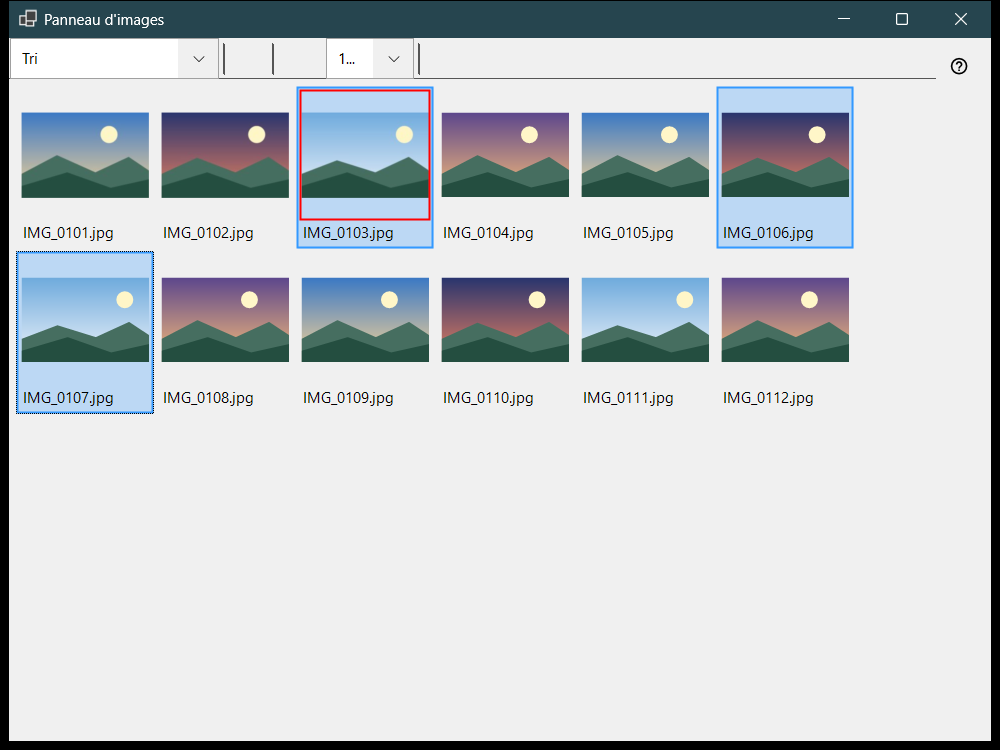
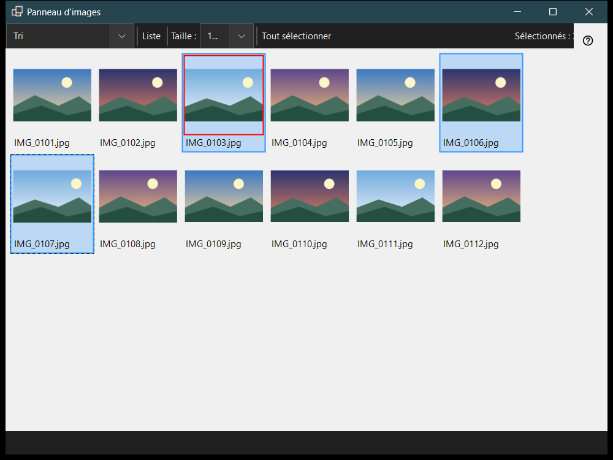

Panneau d'images
Objectif
Le panneau d'images s'ouvre avec F3 depuis la visionneuse et fonctionne en deux modes choisis dans la liste «Mode du panneau» : Tri, une grille de miniatures du dossier courant, et Gestionnaire de fichiers, un navigateur avec des emplacements, des dossiers et des commandes sur les fichiers. Parcourir les fichiers, les sélectionner et fermer le panneau ne changent pas ce que montre la fenêtre principale.


Dans cet ordre
- Appuyez sur F3 dans la visionneuse.
- Choisissez le mode dans «Mode du panneau».
- Sélectionnez des fichiers : clic, Shift+clic pour une plage, Ctrl+clic pour en basculer un, ou tracez un cadre en faisant glisser.
- En mode Tri, appuyez sur 0-9 pour déplacer la sélection vers un dossier de destination, ou sur Shift avec un chiffre de la rangée supérieure pour la copier ; Ctrl+Z annule la dernière opération.
- Double-cliquez sur un fichier ou appuyez sur Enter pour l'ouvrir dans la fenêtre principale.
- Appuyez sur Esc pour annuler une opération en cours, puis encore sur Esc pour fermer le panneau.
Les éléments
Mode du panneau
«Mode du panneau» bascule entre Tri et Gestionnaire de fichiers. Le mode Tri affiche les miniatures du dossier courant pour déplacer et copier rapidement ; le gestionnaire de fichiers parcourt n'importe quel dossier et propose des commandes sur les fichiers.
Taille, disposition et sélection
Le curseur (Taille :) règle la taille des miniatures, «Mosaïque» et «Liste» changent la disposition (Ctrl+L), et le compteur de sélection indique combien de fichiers sont sélectionnés sur le total.
Sélection et tri
Le clic sélectionne, Shift+clic sélectionne une plage, Ctrl+clic bascule un fichier et le glissement trace un cadre de sélection. Ctrl+A sélectionne tout, Ctrl+Shift+A efface la sélection, Ctrl+I l'inverse, la barre d'espace marque un fichier, et les flèches, Home, End, PgUp et PgDn permettent de se déplacer. Les chiffres 0-9 déplacent la sélection vers le dossier de destination de cette touche, Shift avec un chiffre de la rangée supérieure la copie, Del la supprime et Ctrl+Z annule la dernière opération.
Filtre et fichiers masqués
Le filtre de contenu choisit Fichiers multimédias, Médias et documents ou Tous les fichiers, et «Masqués» affiche ou cache les fichiers masqués. «Paramètres..» ouvre la fenêtre Paramètres sur la page Gestionnaire de fichiers, où se règlent le mode d'affichage, le filtre, les emplacements et le tri mémorisé.
Commandes sur les fichiers
Ctrl+C, Ctrl+X et Ctrl+V copient, coupent et collent, F2 renomme, Ctrl+Shift+N crée un dossier, Del et Shift+Del suppriment les éléments sélectionnés et Alt+Enter affiche les propriétés. La copie ou le déplacement entre ressources passe par ce PC.
Créer un ZIP
«Créer un ZIP» regroupe tous les dossiers et fichiers sélectionnés dans une seule archive. La suppression des originaux est désactivée par défaut et n'est autorisée qu'après vérification et publication de l'archive.
Extraire ici
«Extraire ici» agit sur une seule archive sélectionnée : les dossiers et les fichiers ordinaires sont conservés, l'archive d'origine reste en place et les programmes extraits ne sont jamais exécutés. Esc annule l'opération.